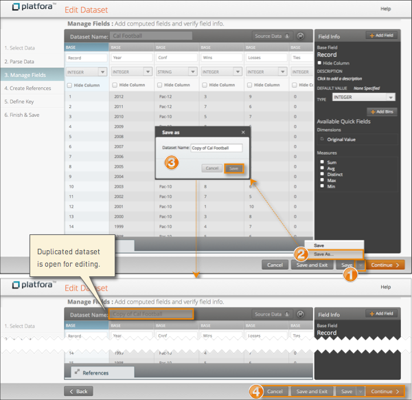

Datasets can take a long time to create, especially if it contains a large number of
base fields and computed fields. Platfora allows users to make a copy of an
existing dataset. The duplicated dataset uses the same characteristics as the original
dataset, such as its data source and field definitions.
The owner of the
duplicated dataset is the user who makes the copy. After duplicating the dataset, you can
then edit it as required.
You might want to create a copy of an existing dataset to:
-
Experiment with changes to the dataset computed fields without affecting
the original dataset.
-
Create another dataset that accesses different source files for users
that only have access to source files in a different path.
-
Change the name of the dataset (then delete the original dataset).

-
Edit an existing dataset, and open the Save menu.
-
Select Save As.
-
Enter a unique name for the new dataset, and click
Save.
Platfora makes a copy of the current version of the dataset using the
new name and keeps the new dataset in edit mode. Any dataset changes that were
made since saving the previous dataset are applied to the new dataset only.
Note: Once a dataset is saved, you cannot change its
name.
-
Continue editing the new dataset as necessary, or click
Cancel to close it.
Since duplicating a dataset changes its name, references to the previous dataset will
not be automatically updated to point to the duplicated dataset. You must manually
edit the other datasets and update their references to point to the new dataset name
instead.